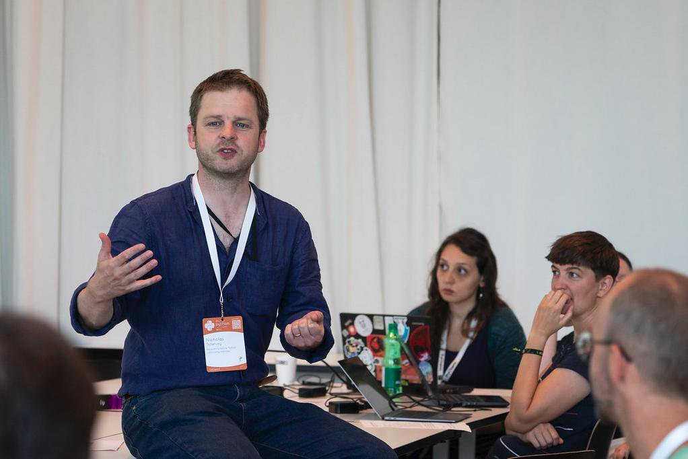
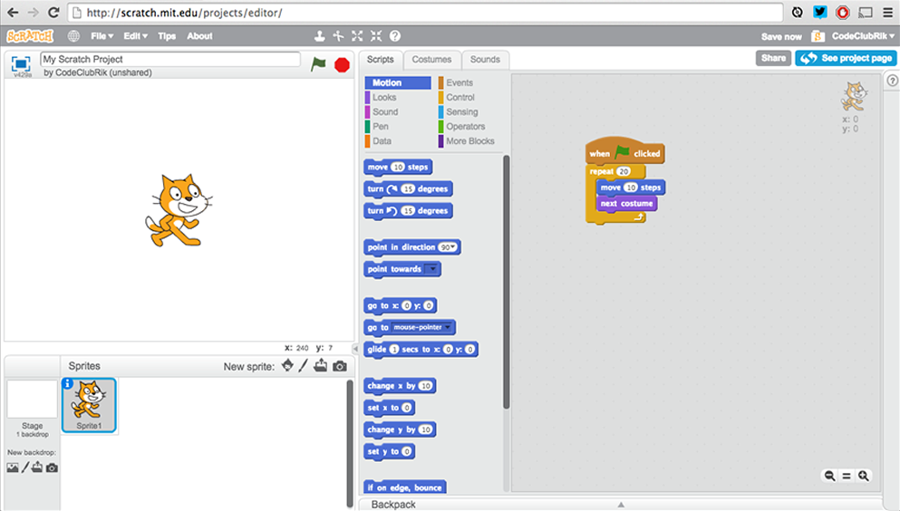
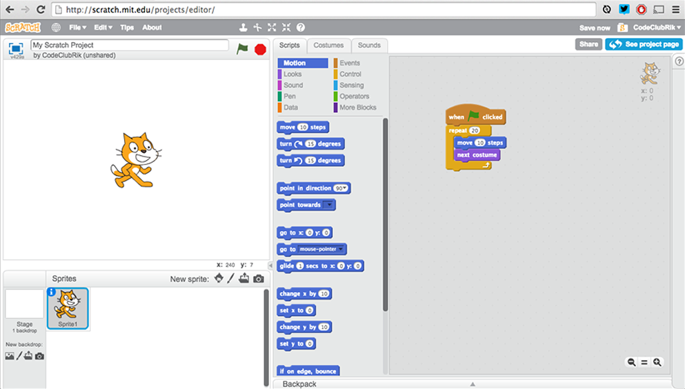
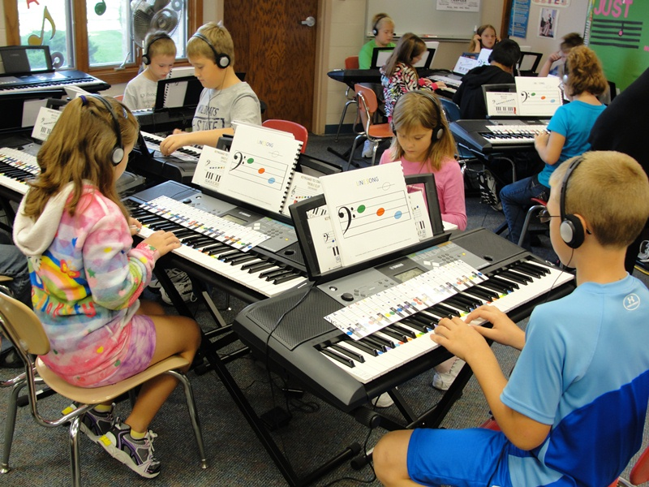
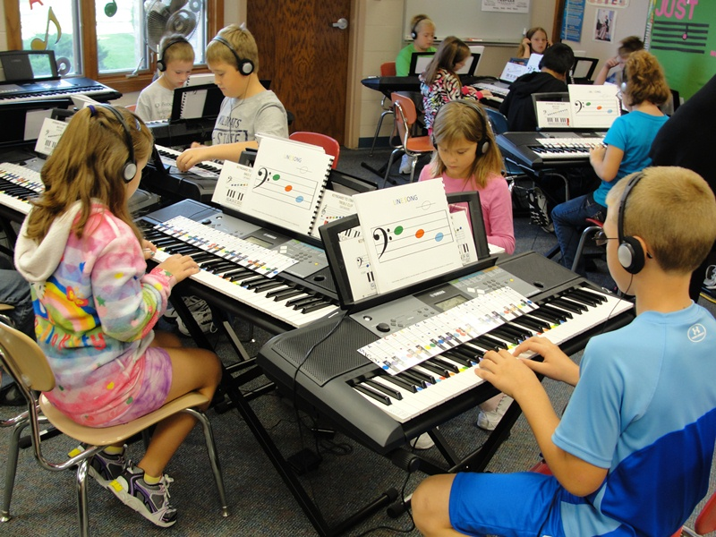
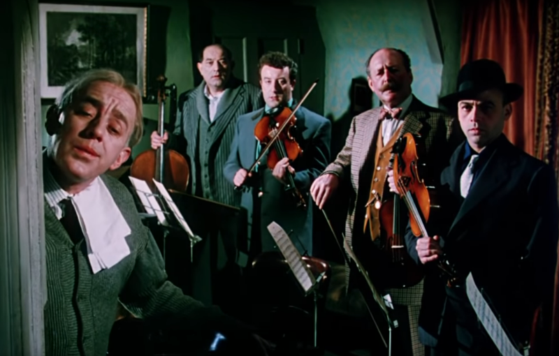
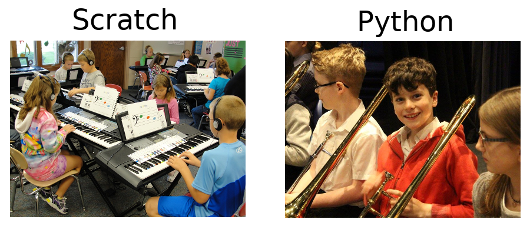
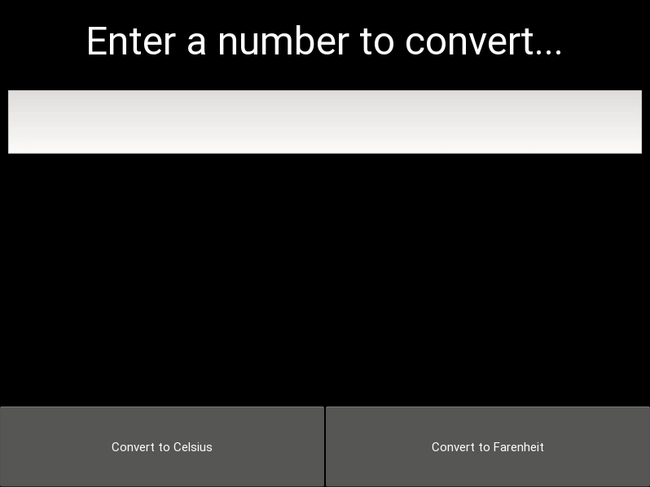

Developing
Developers
(A lazy engineer's long term view)
Nicholas H.Tollervey / @ntoll



 


 

What if we taught music like we teach programming?

If you have £10k, there's nothing wrong with a three
month bootcamp.
But you'll program like someone who has
only been coding for three months.

How do we get from this...

... to this ...

... this ...

... this ...

... or even this ..?
500 years of music education
Good artists copy, great artists steal
(Lazy engineers don't reinvent the
wheel...)


Mu - a beginner's code editor.

PyperCard - HyperCard inspired cross platform GUIs in
Python (this app is only 42 lines of code).
https://codegrades.com/
Education makes our future possible.
What that future is depends upon who
turns up to provide such education.
Don't just sit there, do
something!